数字を、毎日の仕事とつなげて見える化。
見積・請求から案件別の収支まで、バラバラになりがちな管理を一つにまとめます。
- 顧客・取引先管理（CRM）
- 見積・請求書管理
- OCR読込
- 案件別の売上・粗利管理
- 会社・案件別の収支管理
建設業向け統合型ツール「CAREECON Plus」の販売パートナーを募集しています。紹介から代理販売まで、貴社に合う提携のかたちをご用意。
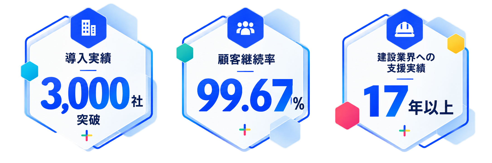
※導入社数・継続率は2026年9月時点／自社調べ
提携モデルや支援内容をまとめた資料を、担当者よりご案内します。
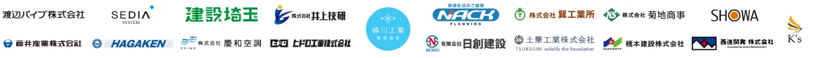
建設DXの市場は拡大を続けています。一方で、中小建設会社の規模や予算にフィットする機能・価格のサービスは、まだ多くありません。だからこそ、提案できる余地があります。
既存顧客に提案できる
クロスセル商材がない
価格競争から抜け出す
差別化の切り口がほしい
単発取引だけでなく
継続的な収益を育てたい
建設業界への販路を
広げていきたい
新規開拓につながる
提案のきっかけがない
業界知識や導入支援に
不安がある
「CAREECON Plus」は、建設業の業務を幅広く支える統合型ツールです。AI機能も活用しながら、日々の課題に応えます。
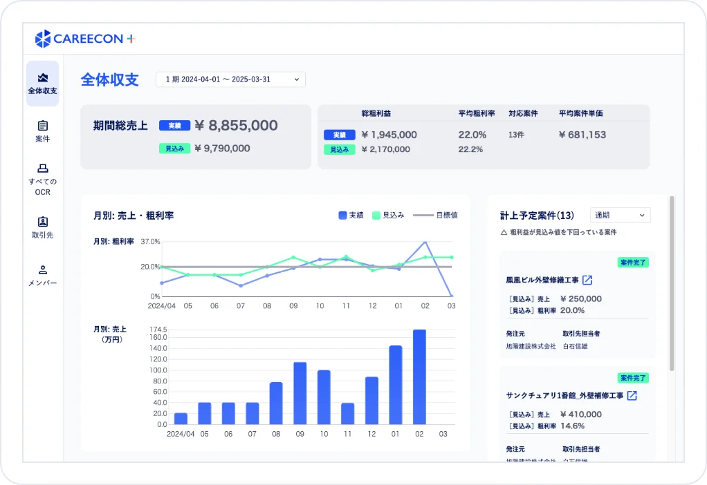
見積・請求から案件別の収支まで、バラバラになりがちな管理を一つにまとめます。
日報や報告書の作成、工程の管理など、現場の事務作業を支えます。
このほか、集客（CMS・AIブログアシスタント）や採用（求人票作成・採用特設サイト）の機能もあわせて利用できます。
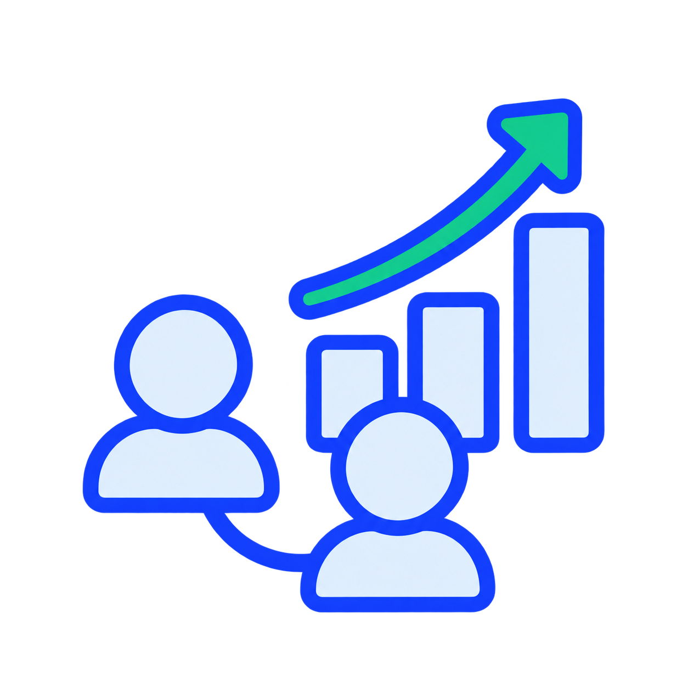
建設業の顧客に「CAREECON Plus」を追加提案。これまで築いた関係を活かして新たな収益機会をつくれます。
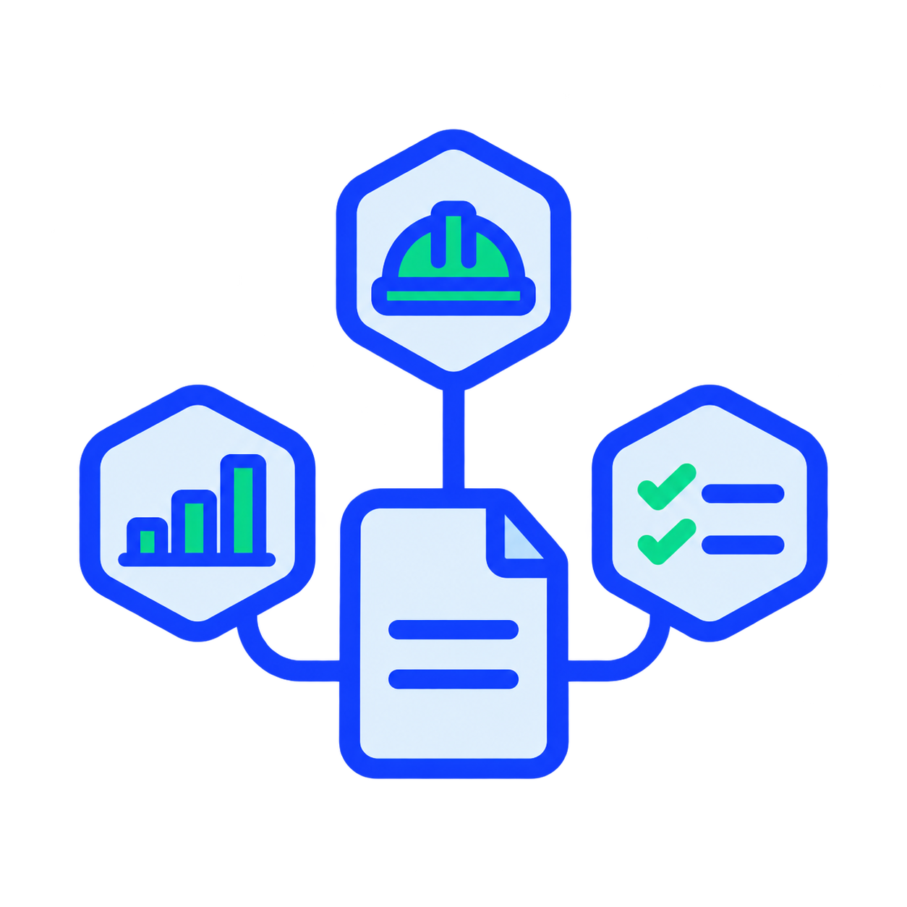
自社の商材だけでは応えきれなかった課題にも対応。施工管理や経営管理まで提案の幅を広げられます。
初期設定や操作の案内、導入後の定着はBRANUが支援。顧客サポートを自社だけで抱えずに提案できます。
既存顧客への新しい提案がなく、既存製品の単価競争に頭打ち感があった。
新規開拓のフックとなる商材がなく、DX関連の相談窓口を持てていなかった。
導入企業が、それぞれの課題に合わせて活用した事例です。
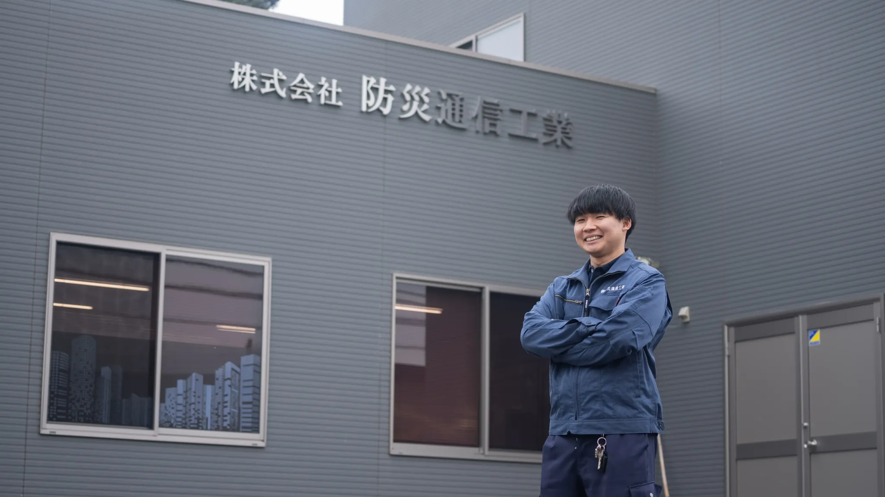
業務効率化報告書作成を1件
30分から10分に短縮
月80件の点検報告書の作成に、月40時間を要していた同社。施工管理アプリで作成を効率化し、全社で月27時間の業務効率化につながりました。
活用内容：施工管理アプリによる報告書作成
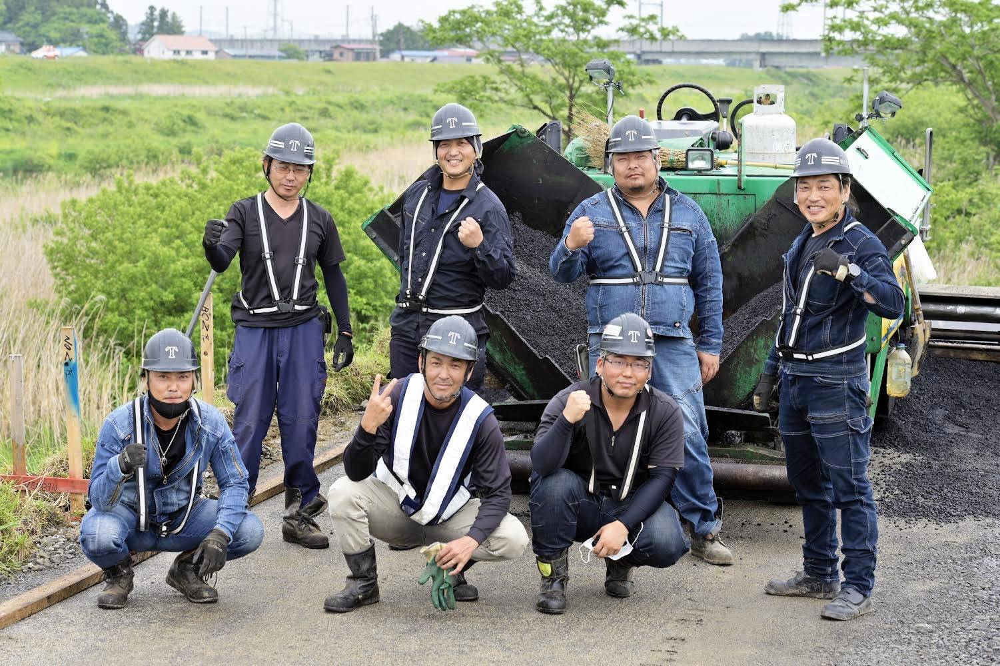
採用応募がほぼない状態から
2名の新規採用に成功
従業員の退職による技術者不足に直面。Webサイトを新たに構築し、経営哲学や自社の強みを求人票に明確に反映することで、採用につなげました。
活用内容：Webサイト構築・求人票作成
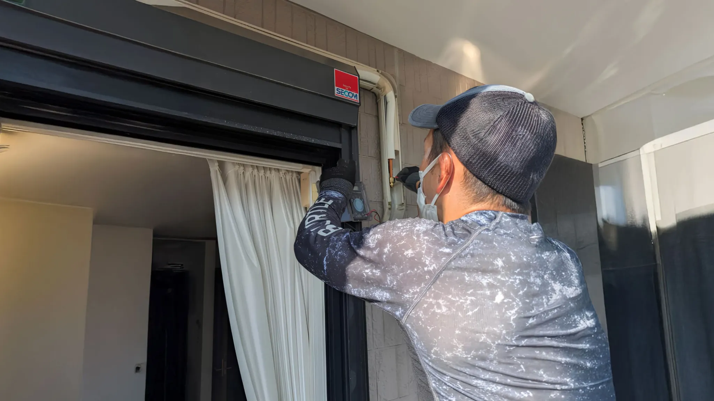
集客Webサイトを通じて
月5件の問い合わせを獲得
一般顧客からの受注拡大に向け、Webサイトを新たに構築。AIブログアシスタントで記事制作の負担を軽減し、一般顧客の成約はほぼWeb経由になりました。
活用内容：Webサイト構築・AIブログアシスタント
※各社への取材時点の内容です（2026年9月時点）。Webサイト構築などの支援を含む事例であり、特定のAI機能単独の成果や、同様の成果を保証するものではありません。
見込み顧客のご紹介から、商談・契約までを担う代理販売まで。貴社の営業体制に合う方法で取り組めます。報酬条件は個別にご案内します。
見込み顧客をご紹介いただくモデル。商談・契約・導入支援は本部が対応するため、少ない営業負担で始められます。
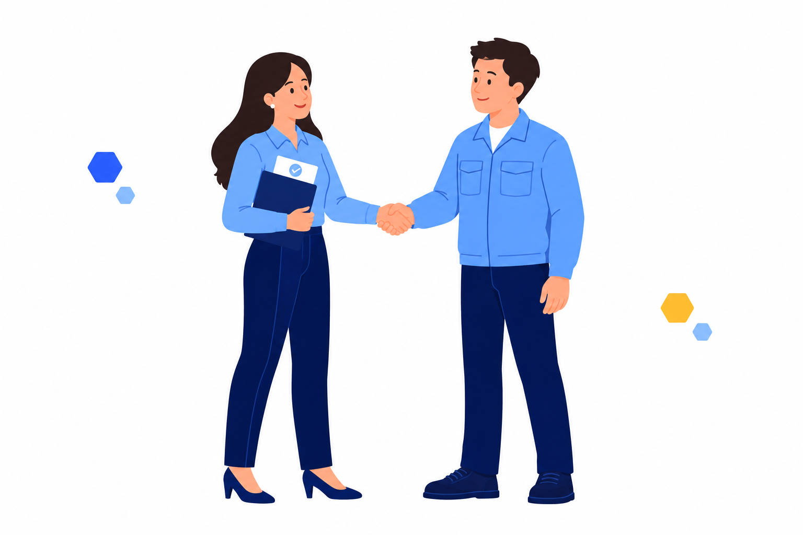
貴社が商談から契約までを担当するモデル。自社の営業力を活かし、取扱商材として本格的に展開できます。
提案の進め方と、本部が担当する範囲を比較できます。
| 主な対応内容 | 紹介（トスアップ） | 代理販売（クローズ） |
|---|---|---|
| 見込み顧客へのご案内 | パートナー企業 | パートナー企業 |
| 商談・提案 | BRANU | パートナー企業 |
| 契約獲得に向けた対応 | BRANU | パートナー企業 |
| 初期設定・導入支援 | BRANU | BRANU |
| 導入後の定着支援 | BRANU | BRANU |
※本表は基本的な役割分担です。代理販売では営業同行・Web商談支援もご相談いただけます。契約手続きや導入支援の詳細は、提携モデルや契約条件に応じて個別にご案内します。
建設業界では、業務効率化と人材不足への対応が継続的な課題。建設テック市場の拡大が見込まれています。
「2024年問題」などを背景に、業務のデジタル化が求められています。
機能だけでなく、導入・定着支援まで含めた提案が重要です。
単位：億円／年平均成長率7.4%（2023～2030年度）。出典：矢野経済研究所「2025年版 建設DX（ConTech）市場の実態と展望 ～ソフトウェア・ソリューション編～」（2025年3月）、2025年4月17日プレスリリース。ベンダー売上高ベース、土木を除く建築分野のソフトウェア・ソリューション市場。ハードウェアは対象外。
融資先の経営課題に対するDX支援策として紹介し、接点を深める。
融資先との関係を、資金面の支援だけにとどめたくない。
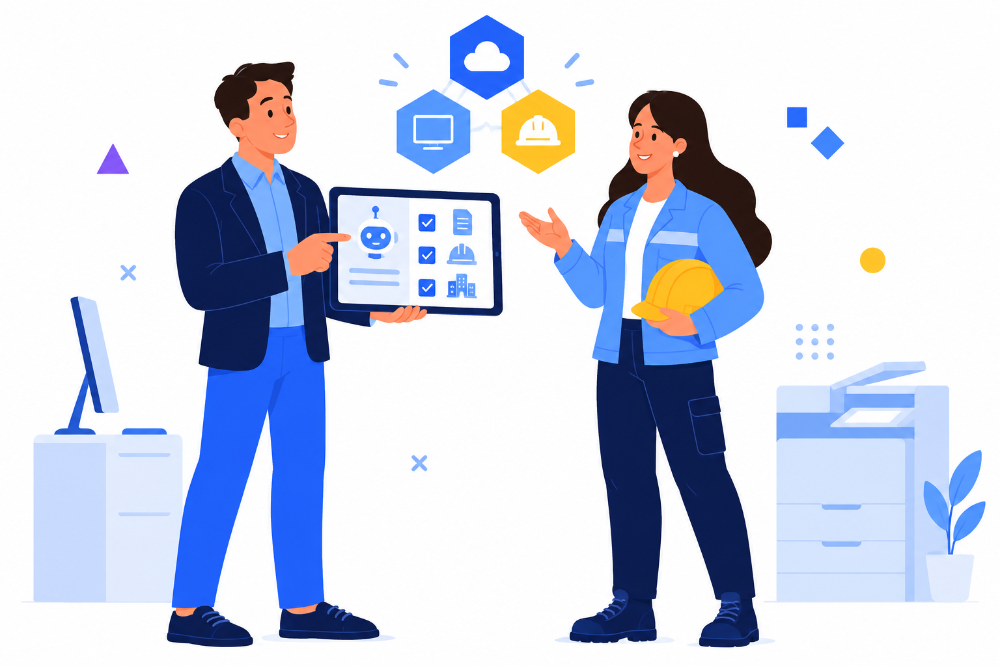
建設業に特化したAI機能を持つツールを、既存顧客への追加提案に。
既存の販売網を活かせる、建設業向けの新商材がほしい。
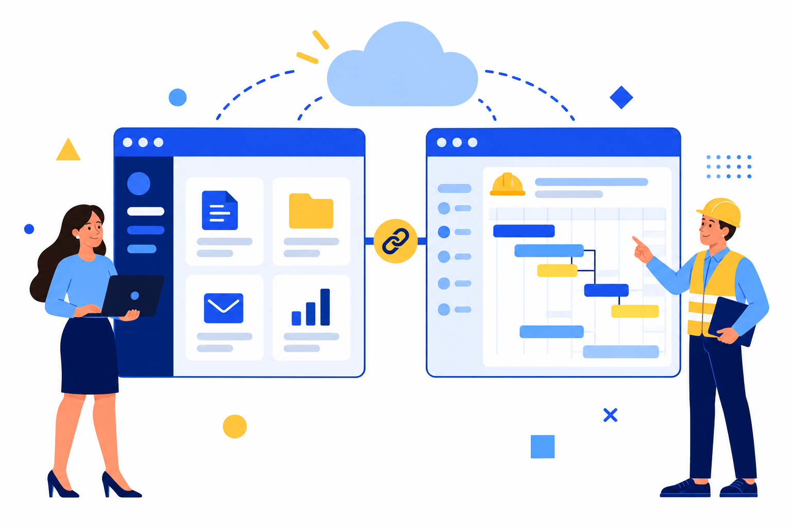
既存プロダクトと併せて提案し、顧客への提供価値を広げる。
自社プロダクトだけでは対応しきれない建設業特有の課題がある。
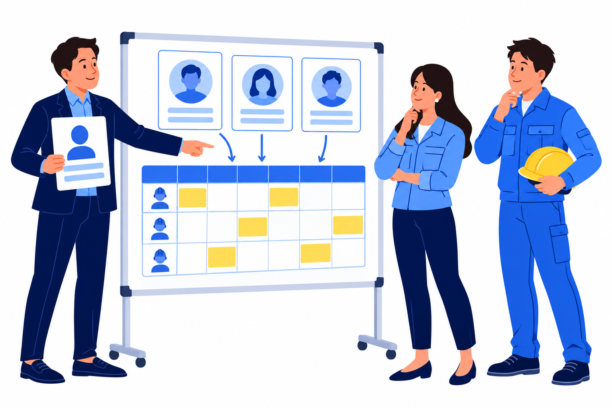
採用の相談をきっかけに、施工管理や経営管理の課題にも提案を広げる。
人材紹介以外にも、建設業の顧客と継続的な接点を持ちたい。
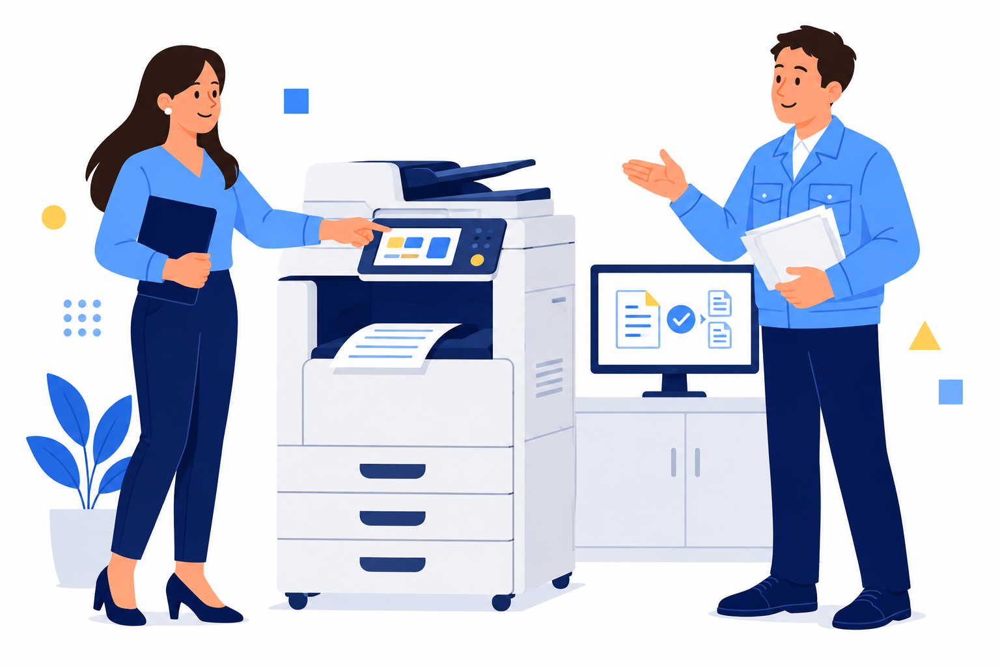
提案の幅を広げ、建設業の顧客との接点を強化
既存製品の価格競争に課題を感じている企業に。「CAREECON Plus」を追加商材として提案し、本部の営業資料や商談同行を活用できます。
新たな顧客接点をつくり、本業の提案機会にもつなげる
建設業のデジタル化に関する相談を、新たな顧客との接点に。導入後の運用支援は本部と連携し、本業での継続的な支援につなげます。
貴社に合う提案の進め方や、提携前に確認しておきたいポイントをご紹介します。
建設業界の知識がなくても取り組みやすいよう、営業から導入・定着まで支援体制を用意しています。
お問い合わせ
資料請求
個別面談
条件のご案内
パートナー
契約締結
営業研修
販売準備
販売
スタート
はい。営業資料の提供、商談同行、研修など、本部の支援体制をご用意しています。
加盟金・初期費用は不要です。具体的な契約条件については個別にご案内します。
初期設定や導入後の定着支援などは本部が対応します。役割分担の詳細は提携モデルに応じてご説明します。
はい。貴社の営業体制や顧客基盤に応じてご相談いただけます。
報酬体系や支払い条件は、資料請求後に担当者より個別にご案内します。
どのような提携ができるか、まずは情報収集から。
制度の概要や支援内容を、担当者よりご案内します。